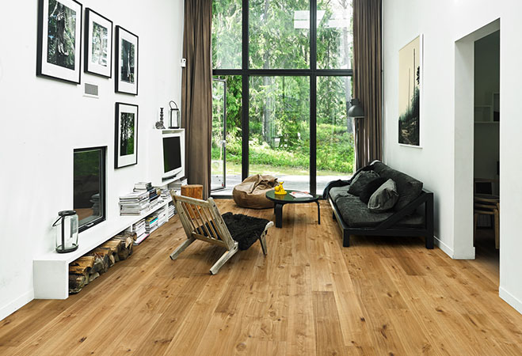
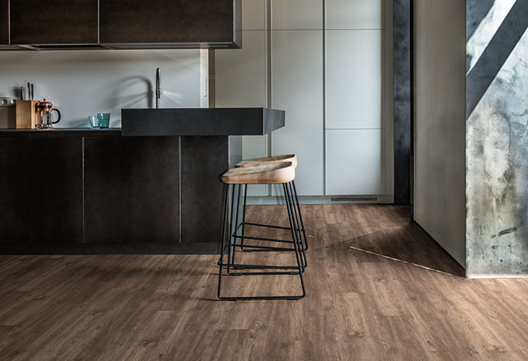

Kährs - это компания, производящая напольные покрытия и паркет.
Наша цель - сделать процесс выбора паркета как можно проще и помочь Вам принять правильное решение. Поэтому мы собрали наши лучшие советы, вдохновляющие статьи и фотографии в одном месте.

Деревянные полы сохраняют теплоту и уют для ваших ног в холодные время года и комфортную температуру в жаркие дни, благодаря натуральной, ячеистой структуре древесины. В нашем виртуальном шоу-руме вы можете проверить как будет сочетаться конкретный декор с различными типами интерьеров.

Kährs Luxury Tiles -это линейка премиальных виниловых покрытий, разработанных для повседневной жизни. Красивая и естественная текстура дерева придает покрытию неповторимый внешний вид, а широкий ассортимент различных дизайнов позволит легко подобрать декор, который будет соответствовать вашему индивидуальному стилю. Попробовать их все в нашем виртуальном шоу-руме.
Компания Kährs была основана в 1857 году глубоко в сердце шведских лесов. Сегодня мы являемся одним из старейших производителей напольных покрытий в мире. Мы также стали одним из самых крупных поставщиков на глобальном рынке, широкий ассортимент напольных решений Kährs предлагается в 70 странах по всему миру. Главный ключ к успеху - это наша страсть к производству красивых полов, отражающих высокий уровень мастерства и качества продукции.